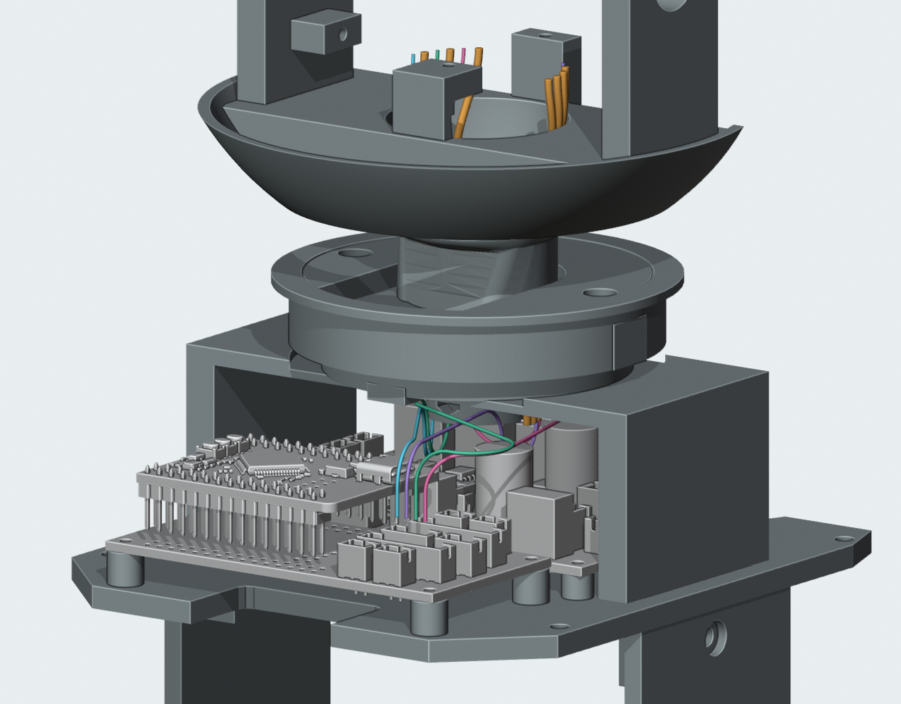
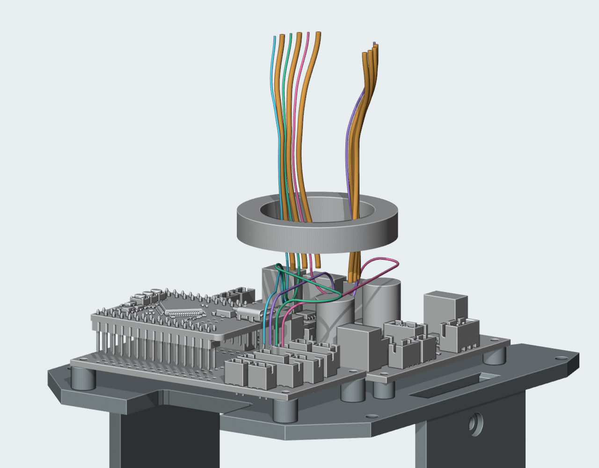

← 已应用的颈部结构CAM身体段与颈部11线排布
2026-10-05T17:41:55.242462+00:00
独立走线候选，未应用主模型；完整线束仍未完成。没有修改打印件、接口或板卡。
M1.49当前原件上，11条局部路线已把身体入口抬至Z138mm；130姿态、局部线间下界0.423mm通过。CAM四根线已从Motion J5接到颈部Z200mm；其中一根上调1.05mm走线层，四根同时排布与七条局部容量样线共存检查通过，最小数值间隙下界0.330mm。所有打印件不变。头部端口、另外七根线的完整两端、FFC、固定与应力释放、带线装配及制作图仍未完成；这是独立候选，未加入主模型。

当前框架中的零位候选。四种彩色线是CAM的身体至颈部段；橙色为另外七条局部容量样线。
隐藏桥座和转动座展示路线；检查仍包含209个原件、29个对插包络和14条已有静态线候选。检查范围
| 项目 | 结果与边界 |
|---|
| 11条局部路线与实体 | 13偏航 × 10俯仰姿态，分组共1716次检查通过。七条Ø1.4224仅作规划，不是已选SH/GH线材。 |
| 局部弯曲与长度 | 13个偏航采样的局部曲线等长64.105mm；最小采样曲率半径14.393mm。不是实际线材动态寿命验证。 |
| 四根身体段 | 两个水平层相差1.05mm；名义最小弯曲半径7mm。身体段与13偏航/130组合姿态的当前原件检查通过。 |
| 所有已规划段共存 | 715对/姿态线间检查通过。有限采样间距用步长及弦误差保守扣除；四条信号线的远距离自接近检查通过。 |
| 端口与压接数据 | PCB针脚来自原生交接；插头线出口为对插壳包络投影，真实压接位置、剥线、尾部过渡及线材选型待确认。 |
路线索引
保持Motion J5的针脚身份。这里的槽号只标机械路线；CAM头部端尚未接上，不能把它当作线序视图。下表长度只包含身体到颈部这一段，不是供应商裁线尺寸。
| 起点 | 颈部槽号 / 零位相位 | 直线出线预留 | 身体段水平层Z | 部分路线中心线长度 |
|---|
| Motion J5-1 | 10 / 173° | 5 mm | 142.64 mm | 136.34 mm |
| Motion J5-2 | 7 / 49° | 5 mm | 142.64 mm | 137.00 mm |
| Motion J5-3 | 9 / 153° | 6.05 mm | 143.69 mm | 168.19 mm |
| Motion J5-4 | 8 / 135° | 5 mm | 142.64 mm | 171.15 mm |
走线检查已修复隐藏代理模型的位置更新问题；在当前装配位置重新执行1716次局部检查和1152次身体段检查，均通过。早期实体报告保留为历史记录，当前实体结论以current_source_verification.json为准；未改变路线的线间距离证明经文件哈希核对后保留。
文件
独立可编辑预览 · 当前实体/姿态复核 · 局部线间 · 身体段组合与全部线间 · 身体段姿态复核
继续完成的内容
- 从颈部Z200mm继续连接CAM和其他头部端口，处理俯仰服务环。
- 另外七根线的身体段及头部端、LCD FFC和相机软排线。
- 固定与应力释放、端子入壳顺序、完整带线装配，以及供应商制作图。
- 实际线材/压接、接口和动态弯曲寿命验证。
当前原件SHA256：89cb07f571367bf87b627c771998d0cc0c28b873be575afdb4002c9bcf5b499f。所有结果为数字候选，未采购或制造放行。